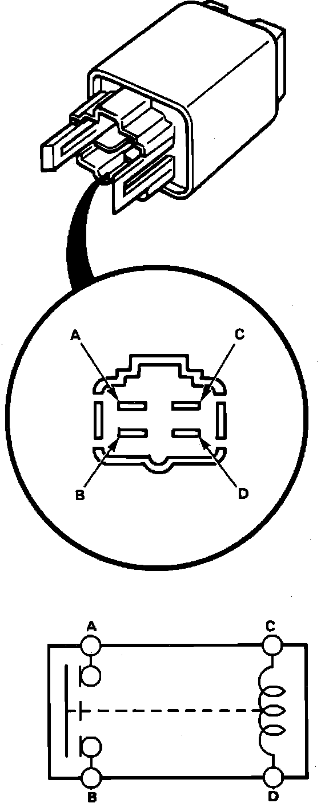

Starter Relay: Testing and Inspection
Fig. 14 Starter Relay Test:

1. Disconnect starter relay.
2. Check for continuity between terminals ``A'' and ``B'' when battery voltage is connected to terminals ``C'' and ``D,'' Fig. 14, continuity should be indicated.
3. With battery disconnected continuity should not be indicated.